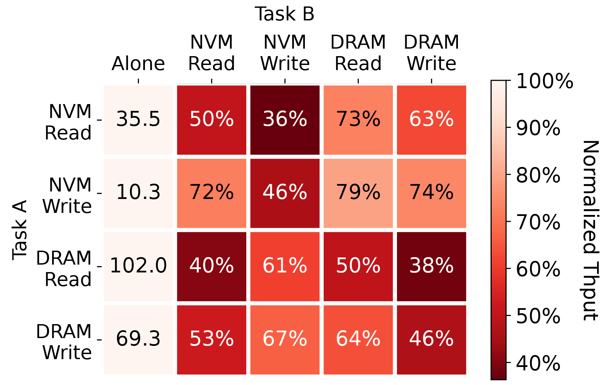
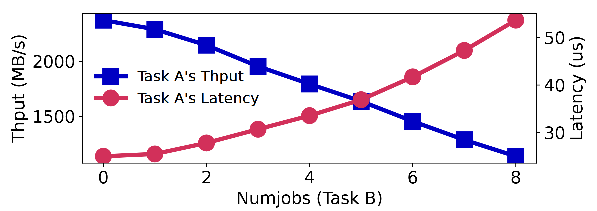
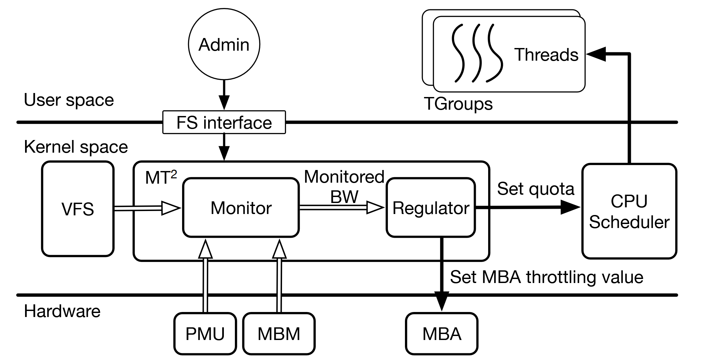
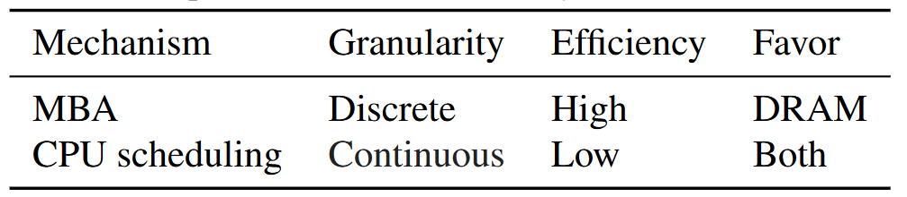
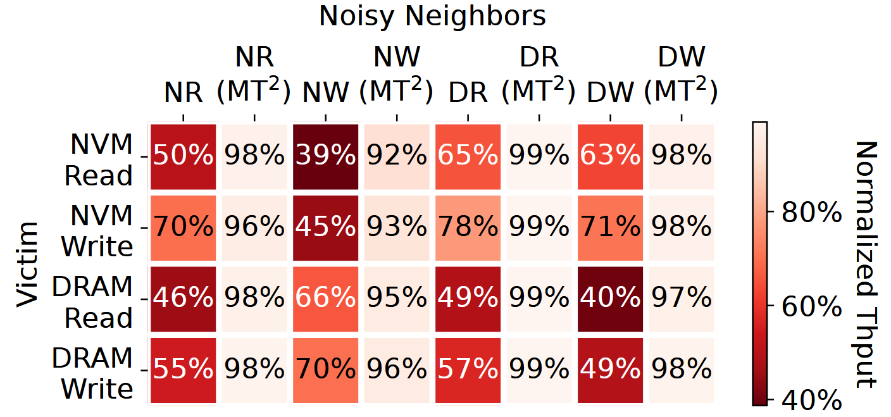
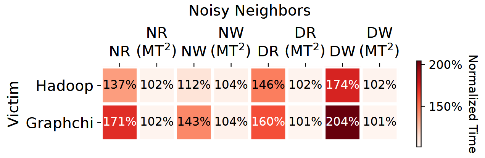
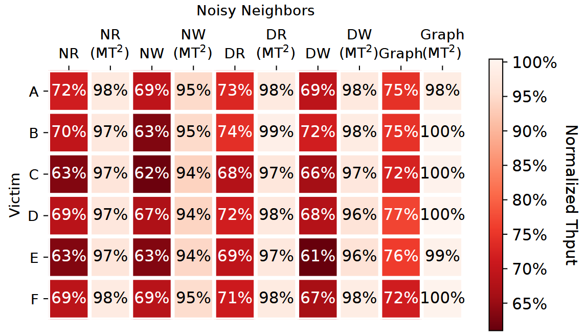

MT^2: Memory Bandwidth Regulation on Hybrid NVM/DRAM Platforms
FAST ’22
memory
systems
serving
compilation
database
MT^2: Memory Bandwidth Regulation on Hybrid NVM/DRAM Platforms
Background & Motivation
Memory Interference Problem
- Multi-tenant environment: VMs, applications or containers of different users share the same memory bus.
- Concurrent memory accesses from different tenants interfere others.
- “Noisy neighbors”: memory-intensive applications
Memory bandwidth throttling (regulation)
- Intel Memory Bandwidth Monitoring (MBM)
- Monitor bandwidth from L3 cache to next level of memory hierarchy
- A group of logical cores can be assigned with a resource monitoring ID (RMID)
- The tracked bandwidth information is recorded in special registers (MSRs).
- Intel Memory Bandwidth Allocation (MBA)
- MBA provides approximate control over memory bandwidth with negligible overhead.
- A configurable rate limiter between each physical core and the L3 cache.
- By setting the delays inserted to memory requests
New challenges on hybrid NVM/DRAM platforms
- Memory bandwidth asymmetry
- Differet memory access types yield different maximum bandwidth. (DRAM reads, DRAM writes, NVM reads and NVM writes)
- The actual available memory bandwidth heavily depends on the proportions of different kinds of memory accesses in the workload.
- Different interference degree
- different types of memory accesses interfere with each other differently
- Inadequate memory regulation mechanisms
- Existing methods work for DRAM-only platforms => available bandwidth is easy to estimate
Analysis of memory interference on hybrid NVM/DRAM platforms

- The impact of memory interference is closely related to the type of memory access.
- NVM accesses affect other tasks more severely than DRAM accesses.
Analysis of memory interference on hybrid NVM/DRAM platforms

- The impact of memory interference is closely related to the type of memory access.
- NVM accesses affect other tasks more severely than DRAM accesses.
- the memory access latency is negatively correlated to the bandwidth usage
Design
Overview of Memory Traffic Throttle (MT^2)

- TGroups: Threads are grouped into Throttling Groups (TGroups) for monitoring and regulation, integrated into Linux cgroups.
- Monitor and Regulator:
- Monitor: Collects data from various sources (PMU, MBM, VFS, modified PMDK) to estimate bandwidth per TGroup for four memory types: DRAM reads/writes and NVM reads/writes.
- Regulator: Dynamically adjusts bandwidth using mechanisms like Intel MBA and CPU scheduling.
Bandwidth Monitor
- Read Bandwidth: Uses PMU counters to track DRAM and NVM read accesses directly.
- Write Bandwidth:
- NVM Write: user-space applications can write to NVM in only two ways
- file APIs (write): MT^2 hooks VFS to track writes to NVM.
- CPU store to memory-mapped files: Applications report NVM writes via modified PMDK libraries.
- DRAM Write: Intel Processor Event Based Sampling (PEBS)
- NVM Write: user-space applications can write to NVM in only two ways
- Interference Detection: Measures latency of memory accesses (reads via PMU queue metrics, writes via direct sampling) to detect contention, correlating latency spikes with bandwidth interference.
Regulation Mechanisms
- MBA (Memory Bandwidth Allocation): Throttles DRAM traffic via hardware-enforced delays but is ineffective for NVM.
- CPU Scheduling: Adjusts #CPU cores assign to the applications via cgroups to limit compute and memory access time, effective for both NVM and DRAM but less efficient than MBA.

Regulation Mechanisms
- Dynamic Throttling Algorithm:
- Step 1: Identifying Noisy Neighbors
- Priority-Based Selection (Disruption degree): NVM writes, NVM reads, then DRAM accesses.
- Detection Criteria:
- Prevention Strategy: TGroups exceeding administrator-set bandwidth caps are flagged.
- Remedy Strategy: When system-wide interference is detected, the TGroup with the highest NVM write/read or DRAM usage is identified as the noisy neighbor.
- Step 1: Identifying Noisy Neighbors
Regulation Mechanisms
- Dynamic Throttling Algorithm:
- Step 1: Identifying Noisy Neighbors
- Step 2: Applying Throttling
- For NVM Writes/Reads: Use CPU scheduling
- For DRAM Accesses: Use MBA to throttle DRAM bandwidth. If MBA is already at its lowest setting, CPU scheduling is applied as a fallback.
Regulation Mechanisms
- Dynamic Throttling Algorithm:
- Step 1: Identifying Noisy Neighbors
- Step 2: Applying Throttling
- Step 3: Relaxing Restrictions
- Increase CPU quota
- Increase MBA throttle value
Evaluation
Experiment Setup
- Server
- Dual-socket 28-core Intel Xeon Gold 6238R CPUs.
- Memory:
- DRAM: 6×32 GB DDR4 per socket.
- NVM: 6×128 GB Optane DC PM per socket (App Direct mode).
- NUMA: cross-socket traffic is disabled
- Workloads
- Micro-benchmarks:
- fio: use
libpmemfor NVM access andmmapfor DRAM.
- fio: use
- Real-World Applications:
- Hadoop and GraphChi: pagerank algorithm (81K nodes, 1.7M edges).
- RocksDB: YCSB
- TailBench Workloads:
img-dnn(image classification) andmasstree(KV store) for latency-critical scenarios.
- Micro-benchmarks:
FIO

Hadoop & GraphChi

RocksDB
